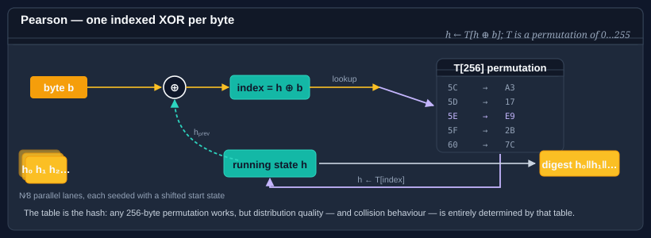

Using Pearson
Peter Pearson's 1990 hash is a table-driven function with a single simple rule: for each input byte b, set h = T[h XOR b], where T is a permutation of the 256 byte values. The permutation's quality defines the hash's distribution, and because the update is one indexed XOR per byte, it is both very fast and very easy to extend to arbitrary output widths by running several parallel accumulators with shifted starting states.

Bodu.IO.Hashing provides a single Pearson type with:
- An output size configurable from 8 bits to 2048 bits in 8-bit steps.
- A choice of four built-in permutation tables, plus a user-defined table.
The type derives from NonCryptographicHashAlgorithm.
Pattern 1 — the canonical 8-bit Pearson
The parameterless constructor gives you the classic single-byte Pearson hash with Pearson's original permutation table.
using System.Text;
using Bodu.IO.Hashing;
byte[] data = Encoding.UTF8.GetBytes("example");
var pearson = new Pearson(); // 8-bit output, Pearson's canonical table
pearson.Append(data);
byte[] digest = pearson.GetCurrentHash(); // 1 byte
An 8-bit hash is only useful as a coarse bucket index — 256 distinct buckets before guaranteed collisions. For anything more interesting, pick a wider width.
Pattern 2 — a wider output
Any width from 8 to 2048 bits in 8-bit steps is supported. The implementation runs one parallel accumulator per output byte, each seeded with a different offset into the table; their concatenation is the final digest.
using Bodu.IO.Hashing;
// 128-bit Pearson with the canonical permutation.
var pearson = new Pearson(hashSizeBits: 128, tableType: Pearson.PearsonTableType.Pearson);
pearson.Append(data);
byte[] digest = pearson.GetCurrentHash(); // 16 bytes
hashSizeBits must be a multiple of 8 between Pearson.MinHashSizeBits (8) and Pearson.MaxHashSizeBits (2048).
Pattern 3 — pick a permutation table
The table defines the hash. The nested Pearson.PearsonTableType enum names four built-in tables plus the user-defined marker:
Pearson.PearsonTableType |
Source |
|---|---|
Pearson |
Pearson's original 1990 table — the historically canonical choice. |
AESSBox |
The AES S-box, used as a permutation (it already is one). |
CRC32HighByte |
The high byte of the standard CRC-32 lookup table. |
SHA256Constants |
A permutation derived from SHA-256's round constants. |
UserDefined |
A 256-byte permutation you supply. |
using Bodu.IO.Hashing;
var pearson = new Pearson(hashSizeBits: 64, tableType: Pearson.PearsonTableType.AESSBox);
All four built-in tables are permutations — every byte 0–255 appears exactly once. This is the property Pearson relies on; it is checked at construction time, so a table with duplicates or missing values is rejected.
Pattern 4 — a user-supplied table
Pass a 256-byte permutation directly to the constructor:
using Bodu.IO.Hashing;
byte[] permutation = BuildMyPermutation(); // must be a permutation of 0..255
var pearson = new Pearson(hashSizeBits: 256, permutationTable: permutation);
Constructing Pearson with permutationTable:
- Validates that the array is exactly 256 bytes long and is a valid permutation (every value 0–255 appears exactly once).
- Clones the array, so later mutation of your buffer does not affect the hash.
- Reports
TableType == Pearson.PearsonTableType.UserDefined.
You can read the table back (as a clone) through the Table property — handy for round-tripping the configuration or for diagnostics:
byte[] tableCopy = pearson.Table;
Pattern 5 — Append / GetCurrentHash / Reset
Pearson follows the standard NonCryptographicHashAlgorithm lifecycle:
using Bodu.IO.Hashing;
var pearson = new Pearson(hashSizeBits: 64, tableType: Pearson.PearsonTableType.Pearson);
pearson.Append(chunk1);
pearson.Append(chunk2);
byte[] partial = pearson.GetCurrentHash(); // snapshot, non-destructive
pearson.Append(chunk3);
byte[] full = pearson.GetCurrentHash();
pearson.Reset(); // back to the initial offsets
GetCurrentHash finalizes on a copy, so mid-stream snapshots are cheap and do not disturb in-progress hashing.
Pearson vs the other non-cryptographic hashes
- vs Fnv1a32 — FNV-1a has better distribution on short inputs and no table memory footprint. Pearson wins when you need a specific output width (e.g. 96 or 160 bits) without stretching a native-width hash.
- vs CityHash64 — CityHash is much faster on long inputs and distributes better. Reach for Pearson when you want the table to be a tunable parameter — e.g. in academic work on hash-function quality.
- vs Crc — CRC is specified for wire formats and has provable burst-error detection. Pearson is a general-purpose fingerprint, not a checksum with error-detection guarantees.
Pearson is not cryptographic. Choosing a different table does not make it adversary-resistant — an attacker who knows the table can construct collisions immediately. For adversarial settings, use SipHash64.
Where to go next
- Using FNV, Using CityHash — faster, table-free alternatives.
- Classic string hashes — Bernstein, BKDR, SDBM, Elf64, and siblings with a similar "one-liner" feel.
- Cryptography hashing guide — when Pearson is not enough.
- Bodu.IO.Hashing namespace page — key types and design notes.
- Hashing & Cryptography guides — every guide in this topic, across Bodu.IO.Hashing and Bodu.Security.Cryptography.